The Dynamic Forms module is used to capture information from site visitors on the front end. Dynamic Forms can work in combination with a Content Type or standalone. Dynamic Forms can be used to create Contact Us and Subscribe widgets/pages to name a couple. The information is then stored in Orchard and can be exported later.
Enable the Dynamic Forms Module
The Dynamic Forms module is different from the custom forms module because it can work in combination with a Content Type to capture input on the front-end or you can choose to just store the form submission. If you choose to just store the submission you will find it in the Form Submissions section of the admin. The information submitted is stored and can be exported using the Import-Export module. Let's start by enabling the Dynamic Forms module that is shipped with Orchard by going to the Modules section in the admin.
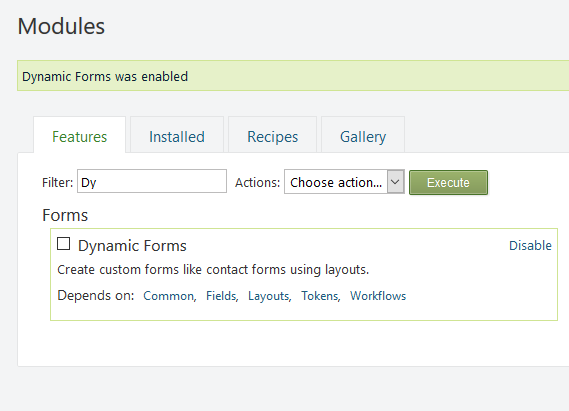
Once the module has enabled the feature, a new content type called Form will appear in the create new content section of the admin.
As stated before, the Dynamic Forms module works with a content type either create a submission or create forms on the front-end of the site. In the New content section of the admin, you can click on Form to create a new form, an edit form screen will popup allowing you to create your form. In this screen is where you can choose to either store the submission or create content from the submitted values. However, let's say we are looking to add a new widget that will live in the right rail (AsideSecond zone) that is a call for visitors to join a mailing list. The only input that will be captured will be the users email address.
Store Form Submission as a Content Type
In order for Dynamic Forms to capture and save an email address from a visitor as Content we need to create a new content type in Orchard. In the admin, browse to the Content Definitions tab and click on Create new type button in the upper right. Let's call the new type 'Subscribe Form'.
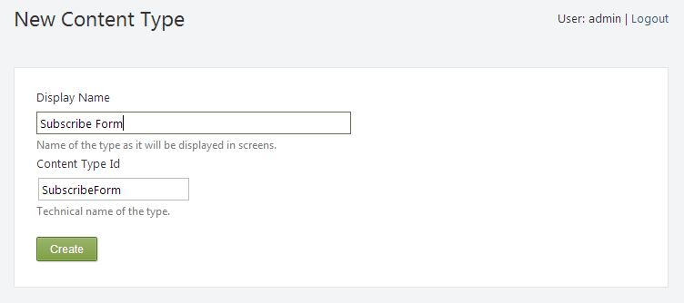
The next screen asks if we'd like to save any Parts to the new Subscribe Form content type. Since all we are looking to capture is an email address, click on the save button without selecting any of these options. Now that we have our new content type we'll want to add an input field for the email.
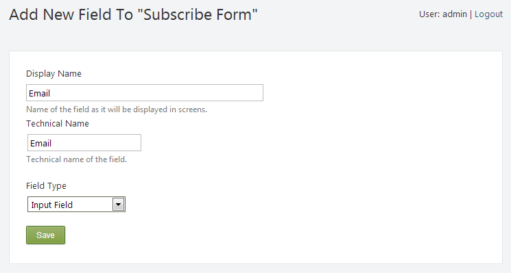
After adding and saving the input field with the name 'Email' we can now customize the type of validation the new input field should have by selecting an input type of 'Email'. Feel free to fill in the other information for the field as well.
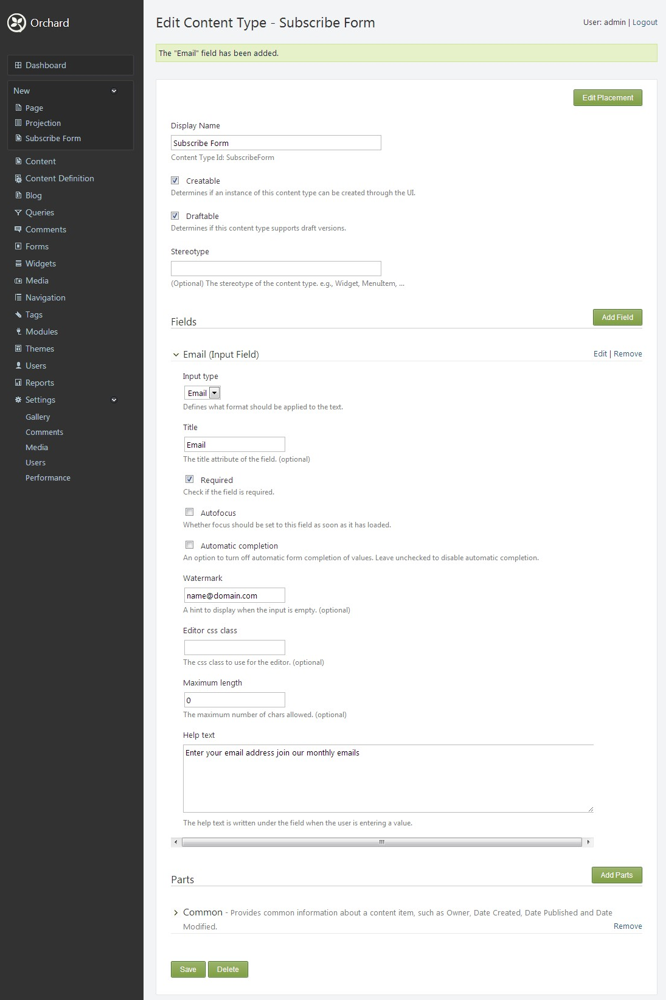
At this point we have all the pieces we need to create out new widget in the right rail (AsideSecond zone). We've enabled the Dynamic Forms module and we've created a new content type (Subscribe Form) that will be used to capture the email address of visitors looking to enroll in the mailing list. All that's left is to create the Widget.
Create a Form Widget
Select Widgets in the left menu of the admin and find the appropriate Add button for the AsideSecond zone and add a Form Widget.
The only thing left to do is to adjust the settings on our new Form Widget. In this example, the layer is set to 'Default' and the position is set to '1'. This will render the widget on the top of the right rail (AsideSecond zone) for all pages. In the Layout section of the form you need to add your form fields and bind it to your content type. In the layout section, see highlighted below, edit the form by dragging an Email Field field from the Layout items on the right side of the screen.
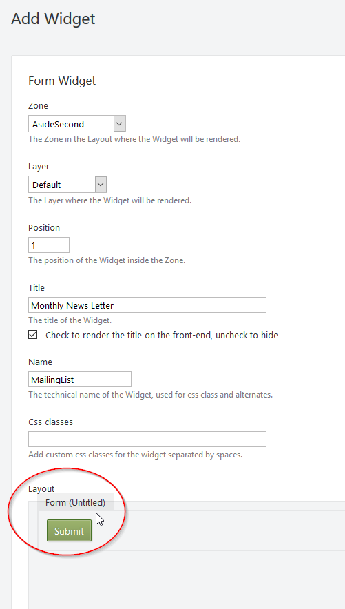
Once it is dropped an Edit Email Field will pop up. Enter the value as shown in the screenshot below.
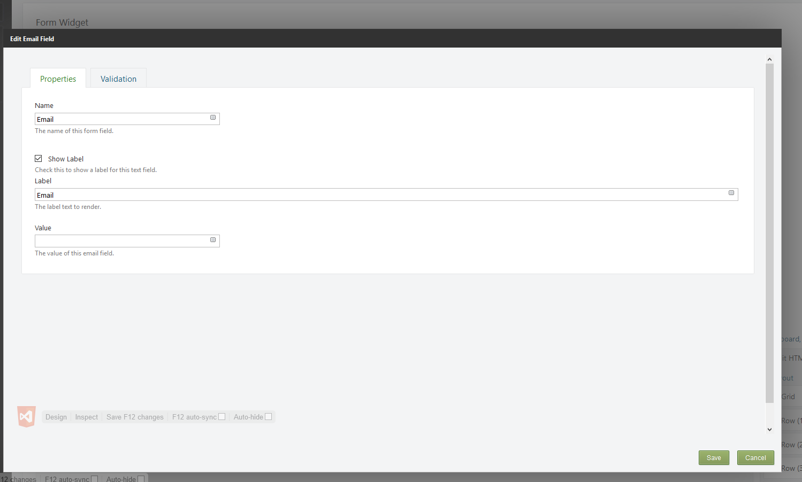
Then click on the Validation tab and make sure to check the Required checkbox. Now you can save the form, but we are not finished yet. After you save, now we can bind the form to your content type we created earlier. Hover back over the form and click on the angle brackets. You should see the Edit Form pop up. Make sure to check the Create Content and then select your Subscribe Form from the dropdown. Now save the form.
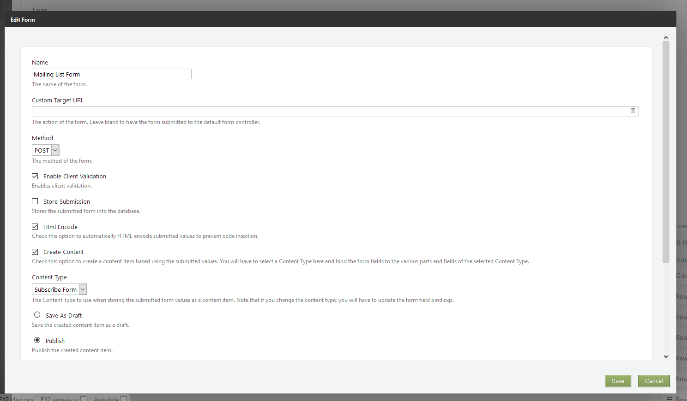
Almost there, now hover on the Email Field and click the angle brackets. Click on the Bindings tab and then check the field you want to bind it to, which in our case is the Email.Text field of the Subscribe Form content type. If you do not see the bindings tab, then please save your form and go back to edit it.
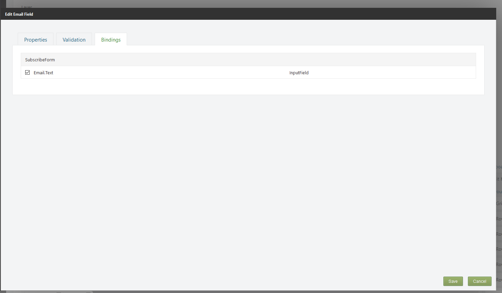
These are some example settings:
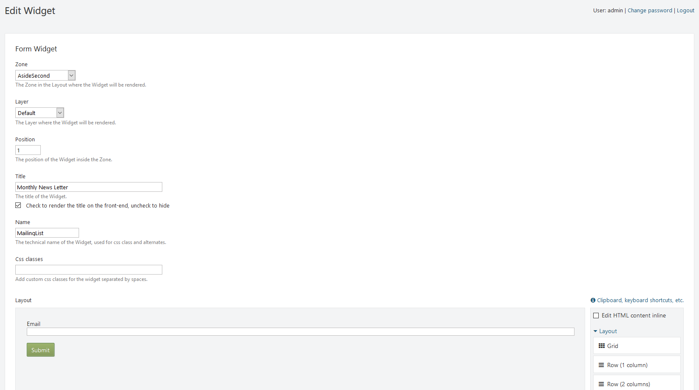
After saving the widget browse to a page on the site and check out the new feature!
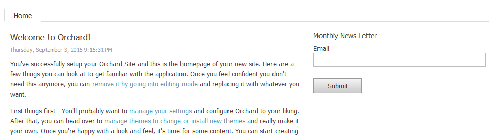
NOTE: If the input field for the owner is visible remove it by un-checking the 'Show editor for owner' option under the Common part of the Subscribe Form content type. 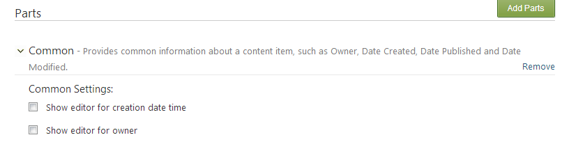
Store Form Submission without a Content Type
This is easy to do, all you need to do is check the Store Submission option in the form layout.
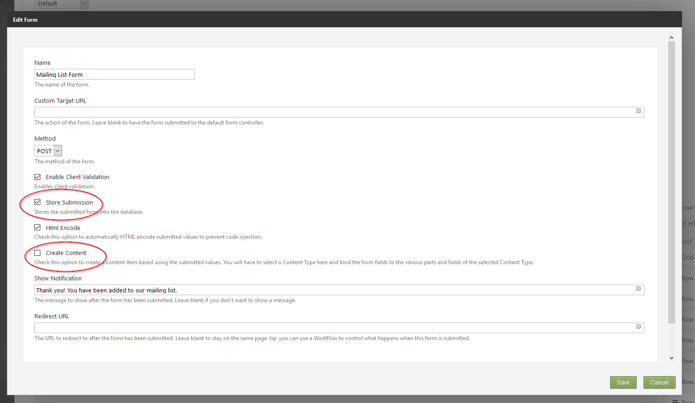
View Submitted Dynamic Forms Data
At this point, we have enabled the Dynamic Forms module, created a new content type for the Dynamic Forms to use and added a Dynamic Forms widget to draw the Subscribe Form content type in the right rail (AsideSecond zone) of all the pages. The submissions are being saved in Orchard because the option in the Dynamic Forms widget 'Create Content' was checked. So where are they being saved? Select the 'Content' link on the left in the admin section of Orchard.
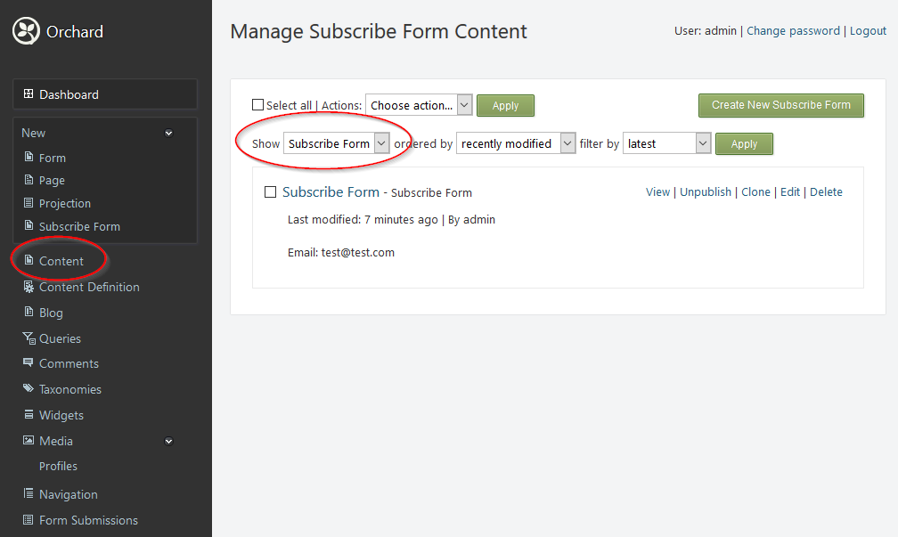
You can view all submitted data without a content type by going to Form Submissions section in the admin.
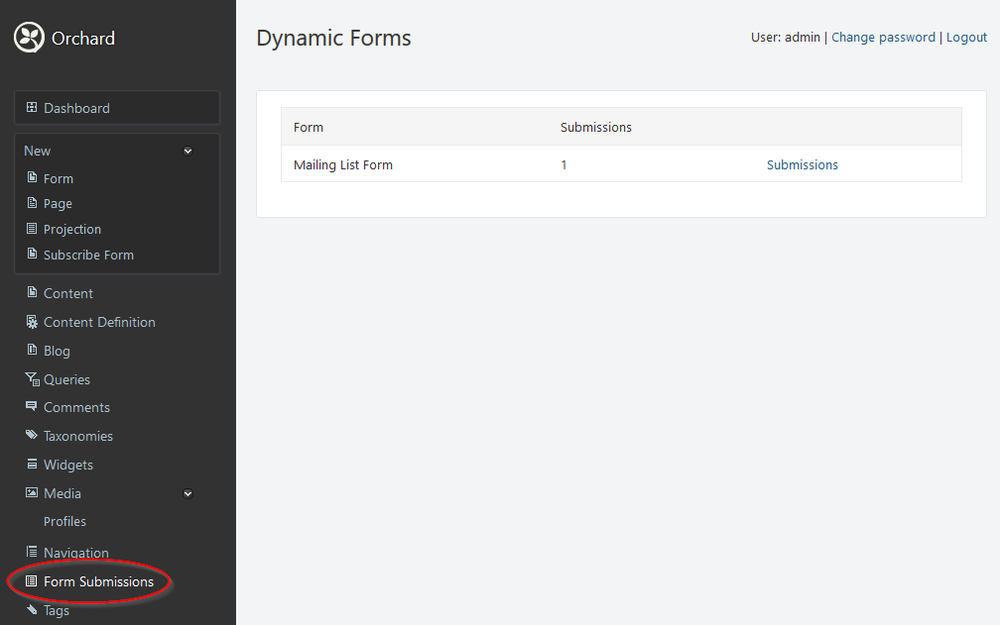
Export Dynamic Forms Data
Since Dynamic Forms can be either saved as a content type or as a form submissions you have different steps when exporting and importing.
Exporting Forms saved as Content Type
The only thing left to do is to export our list of submissions so that the email addresses can be used by services like Publicaster, Campaign Monitor, MailChimp and the like. The easiest way to export anything and everything from the Orchard CMS is to use the Import/Export module. The Import/Export module is shipped with Orchard by default in version 1.6 and on but is not enabled by default. Let's enable the Import/Export module.
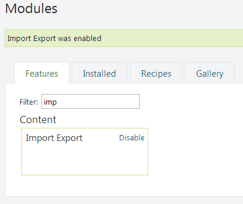
The Import/Export functions are now available in the admin via the left navigation. Selecting the 'Export' tab at the top of the Import/Export section of the admin shows all of the available content types in Orchard. To export the list of emails that have been submitted check the box next to the Subscribe Form content type. Towards the bottom of the page there are a few options for export. The first option, Metadata, will include the definition of the content type. One use for this option would be an easy way to copy a content type and it's records from one Orchard CMS site to another. A prime example of this would be to move a new content type and data from a development site to a production site. When importing an XML file that contains both the metadata and data, Orchard will create the content type copy in the included data.
In the current situation we are only interested in exporting the data so there is no need to check the Metadata option. Also, be sure to bullet 'Draft Only' since none of the items submitted from the front end would have a published state.
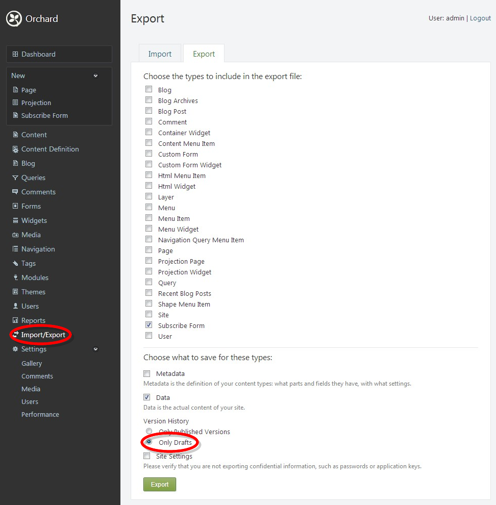
The exported file is and XML file that can be opened in MS Excel and manipulated to be made ready for the email campaign platform of your choice. And that's it... The site is now able to collect visitor's email addresses and save them for export later for a newsletter. The Dynamic Forms is also a great way to implement a Contact Us page or any other number of types of information a site should collect from it's users.
Exporting Forms saved as a Form Submission
To export form submissions you need to enable the Dynamic Forms Import Export module.
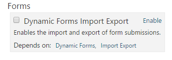
Once enabled, now when you perform an export, you need to enable the custom step called "Forms" to export your Form Submissions
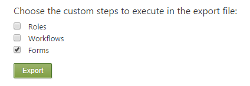